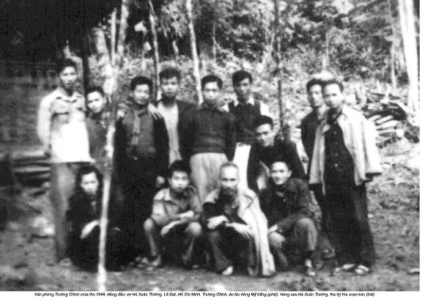

Chương 45

ó sự tình cờ này. Lê Đạt ở Hà Nội là người báo tôi tin Nguyễn Khải chết nên ngày 22 tháng 3 tôi đang định gọi Đạt nói mai tôi đến giỗ 100 ngày Nguyễn Khải thì được tin Đạt chết. Ngã cầu thang. Con rể út Hoàng Minh Chính báo.
Trong một thư gửi tôi, có lần Khải nói giá như có một đêm Trần Đĩnh, Lê Đạt, Nguyễn Khải chuyện với nhau tới sáng nhỉ. Giữa những năm 80, một tối tôi đến Đạt. Nghe Nhiên, con gái cả gọi, Đạt chạy vội xuống và ngã. Người văng đi gần hai mét, đúng là vẽ một parabôn, từ trên cầu thang gỗ ọp ẹp 9 gác Lãn Ông liệng qua mặt tôi xuống nằm gọn vào góc trong cùng của cái bể nước con con. Tôi đỡ Đạt dậy - mắt Đạt đã như thất tinh lạc - đinh ninh anh không chết thì tàn tật. Nhưng trời còn thương, lại đi bộ ngày ngày với tôi rất khỏe… Sau đó ít lâu, một tối Khải bảo tôi phiền ông nói với ông Đạt, ông Dần hộ là tôi sẽ đến thưa với các ông chuyện để các ông có lương và vào hội, (tặc lưỡi) thì là sửa… nhưng có nhận sai bao giờ đâu mà sửa. Ông nói trước cho kẻo tôi đến lại bị các ông ấy tế. Ông Thi gây nên chuyện nhưng đùn cho tôi… Nhưng đến giúp các ông ấy cũng là hợp ý nguyện tôi. Sau vụ vớt xác tàu đắm này, tôi đưa Đạt đi bệnh viện Việt Xô! Bệnh nhân đầy hành lang nhìn con người xuềnh xoàng lơ ngơ theo tôi. Tôi vừa xin lỗi rẽ lối vừa nói: Ông này muốn bỏ bục công an ra khỏi tim người (“Bỏ bục công an ra khỏi tim người” là một câu trong bài thơ Bục Công An của Lê Đạt - BT) nên hơn bốn chục năm mới đến khám bệnh. Bệnh nhân bỗng đều nhìn Đạt với con mắt gần gũi. Lại dẫn đến Nhà xuất bản Phụ nữ để rồi sau Đạt tặng cho mấy chữ rất nữ: Vườn chữ nữ. Đạt rất ngại đến cơ quan Nhà nước. (Dấu hiệu tâm thần của những kẻ bị đàn áp, khủng bố?) Một sáng, anh vào tôi nhờ đến huyện đội Từ Liêm lấy cho con trai anh đi bộ đội một giấy chứng nhận trình độ học. Xong việc, ra ngoài cổng, tôi thấy Đạt ngồi xổm cách đó năm chục bước, ven con đường rải đá mà sau này chú ý đến trí thức thì đặt cho tên Dương Quảng Hàm, mặt lo lắng nhìn tôi. (Họ có cho không?) Hệt trong bức ảnh tôi từng xem, chụp năm 1949, ở Văn phòng Tổng bí thư, Đạt ngồi như thế này, nhưng sát bên Cụ Hồ cũng xổm. Hình tượng quyền lực tối cao mang nét mặt lo âu của kẻ thường dân mới gây xúc động làm sao! Nay thế nào ba hôm nữa 100 ngày giỗ Khải thì Đạt chết! Trăm ngày trước, có vòng hoa Trần Đĩnh, Lê Đạt khóc Nguyễn Khải thì đã lại vòng hoa khóc Lê Đạt! Sáng nay, Thuỳ hoạ sĩ, con gái út cưng của cụ Tam Kỳ, nhà tư sản ủng hộ đảng mà được ép vào đảng rồi khi đảng diệt tư bản thì lại bị ép làm đơn xin ra vì “vào đảng chỉ là để phá đảng”, gọi hỏi tôi có gửi gì cho anh Đạt không. Tôi nhờ một vòng hoa. “Đề sao anh?” - “Thuỳ đề hộ là Trần Đĩnh, Phan Thế Vấn khóc Lê Đạt”.

Rồi con trai Lê Đạt gửi vé máy bay mời tôi ra dự 49 ngày của bố. Tôi đến nhà chị dâu Đạt lấy vé máy bay, chị bảo ở Tây Nguyên về ghé Sài Gòn thắp hương cho người anh mới chết, Đạt đưa số phôn nhờ tôi gọi chú nhưng gọi mấy lần không được. Số trời không cho hai anh gặp nhau, chị nói. Trong hơn nửa tháng ở Hà Nội, tôi ngủ cạnh ban thờ Lê Đạt, nghe đêm mõ gõ miên man như tín hiệu mề dụ vào nơi thăm thẳm nào - hay Đường Chữ. Hay Đường Phật với Thuý, vợ Đạt để quên Đường Đời khốn khổ… Cô gái xinh đẹp diễn kịch thổ cải mừng Tết ở góc rừng cuối cùng của Văn phòng trung ương và của Cụ Hồ, từng làm xốn xang bao chàng trợ lý Tổng bí thư thì rồi bao hoạn nạn. Anh cả, bộ đội bị nghi là Quốc Dân Đảng đã bị trói giật cánh khỉ và giẻ nhét đầy mồm chờ bắn. Ông này sau mỗi lần ở Tây Bắc về thăm em gái lại nhắn ra Hàng Cá, Hàng Đồng gặp. Tránh thằng em rể phản động, Lương Thuý đang bậc 12, sau Thế Lữ bậc 14, thì liền tụt xuống bậc 2 vì “tội vợ Nhân Văn”. Ngày nhiều lần thắp hương cho chồng, Thuý lại khẩn: “Bạn thân thiết ở đây, kìa, đấy, có trông thấy không? Đang nhìn đấy”. Ở người đàn bà mang “tội vợ Nhân Văn” này, hay là vợ các “thương binh ta bắn”, tôi luôn thấy một tư thế chắp tay, cầu xin thầm thì. Một thành kính rên rỉ mải miết. Viết một bài thơ thêu thành trướng treo ở cửa phòng thờ Lê Đạt. Một trường phái thơ tôi gọi là Mụ Sảng. Tôi thích mấy câu “Bàn tay cứng cáp đáp lễ địa ngục… Voi vọt đâm lầy, hồ lô bay”. Tôi hỏi hồ lô là quả bầu chăng? - Không, cái xe lu lăn đường đấy, mà nó cũng mọc cánh bay lên đấy ông ạ…
- Sao lại đáp lễ địa ngục?
- Thì nó chả làm cho mình thấy rõ mình là người thế nào đấy thôi… Cái mình ấy là voi vọt đầm lầy, hồ lô bay và hay hơn nữa, biết đáp lễ địa ngục. Địa ngục gồm một thời gian dài cơ quan, tập thể liên tục ép bỏ chồng đến nỗi một dạo rất hãi ban ngày, gồm chuyện một tuần mấy lần chặt lốp, cắt săm xe đạp và ô tô thay củi đun bếp, khói hun đen nhẻm khắp nhà. Gồm cà những đêm giá buốt, Thuý diễn kịch ở Hải Phòng, Đạt từ chỗ lao động cải tạo xuống tìm vợ. Không có giấy chứng minh nhân dân, Đạt không thuê được nhà trọ, hai đứa ngồi ghế vườn hoa suốt đêm nghe còi tàu thuỷ hú thi với gió biến. Hồng Linh cũng mười lăm năm không giấy chứng minh nhân dân, nếm cho hết món đòn đuổi người Hoa. Tao không cấp, tao lưu lại trên mật mày một bãi đờm. Tôi đã xin Phan Việt Liên ảnh Đạt ngồi xổm bên Cụ Hồ cũng xổm - và hình như đây là cái tư thế xổm ủ ê duy nhất của cụ thấy ở trên ảnh - hai người ngán ngẩm hệt hai bố con lão bán gà toi chợ chiều ế ẩm. Cách đó một mét, Trường Chinh đứng, mặt cũng tư lự như ế một cái gì. (Hồi ấy có khi công việc qua thị trấn Đại Từ trần xì một con phố nhỏ nhà cửa rải rác - sợ bom ông còn mua lẻ thuốc chống sốt rét về phát cho anh em ở quanh ông). Không ai làm dáng, lấy le, không một mỉm cười, không một ánh vui trong mắt, đằng sau là lán nứa, sạp nứa cùng ngổn ngang những gốc cây cụt. Một vùng mới khai khẩn, còn tanh bành và bức ảnh có hai đấng đầu não nom bơ vơ một màu hoang vắng, nguyên tlnìy, kiết xác khiến cảm động, cái mà nay tôi có thể gọi là màu của “một mình giữa vòng vây”, vùng giải phóng đang cứ hẹp dần lại. Trung Cộng chưa Nam hạ, chưa thành đại hậu phương, ôi, nếu quyền lực mà đều mang bộ mặt kém mọn, ưu sầu, rầu rĩ này thì phúc cho dân lắm. Xem ảnh ngồi xổm của hai bố con lão bán gà ế, chợt tôi thấy thiếu Tố Hữu. Thì nhớ ra chuyện Khuê, vợ Trần Dần mới bảo tôi hôm qua: Bữa ấy ông Tố Hữu đến nhà để bảo ông Dần viết phê phán Lê Đạt, Hoàng Cầm, Nguyễn Hữu Đang ra Nhân Văn. Ông Dần vừa ra cửa tiễn Tố Hữu quay vào thì bố ông Dần nằm trên giường ở góc nhà gọi nói: Không chơi được với con người này, cái mắt ấy là không tin được. - Dạ, thưa bố, ông ấy là cấp trên của con… - Thế thì càng không tin được… Người bố nhìn bằng mắt người, Trần Dần nhìn bằng mắt đồng chí. Con mắt đòi đến ở với xóm nghèo, xóm thuyền thợ. Tôi chợt thầm hỏi nếu Tố Hữu cũng chụp thì trong con mắt ông có cái nét âu lo, lủi thúi, ế ẩm chung của toàn bức ảnh không? Hay tưng bừng? Ông có cái gien tưng bừng để chuyên dụ người theo ông.
Về bức ảnh này, tôi đã nhắc đến ở một chỗ đông. Tối ấy có cuộc nói về thơ Lê Đạt ở L' Espace - Alliance Francaise. Tôi dự và ẩn mặt. Nhưng chủ tịch đoàn moi ra và đòi tôi nói. Tôi nói rất vắn. Trên phông lớn trang hoàng sau chủ tịch đoàn, có dòng chữ “Bóng chữ ngả dài trên đường chữ”, tôi chỉ vào nó, nói: Nếu Lê Đạt làm câu này, tôi sẽ góp ý nên sửa là “Bóng chữ ngã dài trên đường chữ”. Cậu tự gọi là phu chữ mà, và cậu thừa biết đã có bao nhiêu xác chữ ngã trên đường chữ mà… Rồi tôi nói hai điều về con người Lê Đạt: Trung thực, trọng lẽ phải. Chính Đạt đã nói trái ý Trường Chinh ngay trong bữa sơ kiến để Tổng bí thư xem nên nhận anh làm thư ký hay không. Và nói đến bức ảnh hai ông cháu nhà bán gà ế chợ chiều, ủ ê, tiu nghỉu. Để kết luận năm phút nói ngắn gọn như sau: Nếu tất cả các bộ mặt quyền lực đều giống bức ảnh hai ông con nhà bán gà ể thì hay biết bao nhiêu cho dân.
Lê Đạt và tôi chơi với nhau thiếu một năm tròn một hội. Đã một lần, Đạt bảo tôi: Mày mà không viết thì tao coi là thất bại của tao. Khi biết tôi lại viết, Đạt nói tao mừng quá. Có gì tao đọc với. Sợ ồn ào, tôi chỉ: Ờ, ờ… Đạt không nhìn thấy một dòng nào tôi đã viết. Tôi cần hết sức lặng lẽ, cô đơn.
***
Viết là nhu cầu máu thịt nói lên sự thật đã sống. Lê-nin lại đòi người cầm bút làm chiếc ốc vít phục vụ đảng, ông đã hô: “Đả đảo nhà văn phi đảng”. Nhà văn phi đảng thì cũng sẽ giẫy chết như đế quốc. André Malraux viết: Cuộc đời chẳng ra cái quái gì nhưng cũng chả cái quái gì bằng được cuộc đời. Như muốn góp lời, Claudel viết: Không có gì bằng được việc chống lại một cuộc đời hèn kém, ngu dốt và bền gan cam chịu. Nhu cầu dùng văn chương tự diễn dạt đời mình dù nó chả ra cái quái gì thật là ghê gớm. Tôi cứ nhớ chuyện một phụ nữ Nhật bị liệt thần kinh toàn thân, trừ mi mắt còn mở khép được. Thế là hình thành ở bà một hệ tín hiệu cộng trừ nhị nguyên thay cho ngôn ngữ. Mở là gật, nhắm là lắc. Người thân đưa một bảng chữ cái đến trước mắt bà, cầm bút chỉ vào từng chữ. Và theo mắt bà mở khép mà ngày ngày tháng tháng ghép lại những chữ cái được mi mắt đánh moóc chấp nhận để cho ra đời một quyển sách có tên: Tôi muốn sống. Vâng, bà đã chống lại cuộc đời hèn kém. Nhu cầu tự diễn đạt cũng đã khiến Gunther Grass giải Nobei viết hồi ký thời ông từng là lính ss Quốc xã. Lòng trung thực giúp ích hơn lý tưởng. Nó làm cho ta gột rửa tội lỗi còn lý tưởng thi dẫn đến tự yêu mình vô độ, tôn mình làm chân lý vô địch do đó sát hại luôn trung thực. Trong khi văn học chân chính thì nhất thiết trung thực. Đầu thế kỷ 21 người Nga nói nếu không có Soljenytsin thì người ta sẽ không biết nhìn thế kỷ 20 ra sao. Và Trung Quốc tuy bị Google kiện tội tin tặc mà vẫn có blog Hán Hán chủ trương phải nghi ngờ trật tự đang tồn tại, nếu không thì bạn đã bắt đầu đi vào con đường gian dối rồi đó. Hán Hán cho rằng có hai lô-gic: Một của Trung Quốc, một của thế giới. Cũng như cái gì là tính người thì hợp với thế giới, cái không hợp với thế giới thì không có tính người. Nhà văn Hán Hán nổi tiếng thế giới này tiên đoán Trung Quốc có thể là công xưởng lớn nhất thế giới nhưng không thể là cường quốc văn hoá được. Hán Hán nói ở đất nước này có ba hạng người: chủ, đày tớ và chó. Đày tớ đễ chuyển hoá thành chỏ. Chính quyền không đụng đến vì ngại mấy chục triệu người chờ đón đọc blog Hán Hán. Có những người làm theo lời Jesus nói: “Kẻ nào dè xẻn đời thì đánh mất đời”. Họ biết rằng đánh mất đời nhất là cam câm, không dám nói, úp một cái nồi đất đen nhẻm lên những mầm ý nghĩ nảy xanh trong đâu. Hình như kẻ không dè xẻn đời thường chọn khinh mạn. Cao Bá Quát, Hò Xuân Hương… Đâu như Mark Twain đã nói: Bất kính là để bảo vệ tự do. Nhà văn của chúng ta ngược lại đã tự nguyện tước đi tự do hay nhu cầu tự diễn đạt. Bởi đảng và lãnh tụ ra rả nhồi vào đầu họ rằng họ xấu xa, bẩn thỉu vì bệnh tự do chủ nghĩa, họ chả có tư cách gì để thưa thốt.với đân, rằng đất nước và nhân dân - trong có nhà văn họ - đã được lãnh tụ và đảng cứu vót ra khỏi vòng nô lệ, rằng để đền đáp công ơn này, họ phải tôn kính, phải nghe lời và làm đày tớ cho lãnh tụ và đảng trên con đường vẻ vang giải phóng loài người, ôi, đã làm đày tớ thì có đời thuở nào còn dám sáng tạo? Tiền chiến viết tốt, sau cách mạng viết dở vì thế! Của riêng còn có chút này mà đem gửi tiệm cầm đồ thì chết mất ngáp là cái chắc! Một tờ báo phỏng vấn Hữu Thọ và vị cựu Trưởng ban tư tưởng chất ngất một dũng khí bảo vệ độc tài, đã nói: “Tri thức là không được phép hèn”. Vụt nhớ phái hữu Trung Quốc nói vô sản lãnh đạo đại trí thức của tư bản bằng tiểu trí thức của nó.
***
Đọc bài phóng viên Hồng Thanh Quang trên “An Ninh Cuối Tuần” sau Tết Đinh Hợi, phỏng vấn chủ tịch Liên hiệp các tổ chức hữu nghị Việt Nam viết: “Những người Mỹ chân chính biết ơn Việt Nam bởi vì chúng ta đã tạo ra một cơ hội cho họ nhìn nhận lại bản thân và làm cha đất nước họ tốt đẹp hơn, hữu lý hơn?” Tốt quá, diễn biến hoà bình được như thế cho bọn đế quốc thì Lê-nin, Stalin, Mao vái mệt. Sực nhớ hồi Vụ bảo vệ hỏi cung, 1968, tôi có kê ra một tội châm biếm láo. Cũng là muốn diễn biến hoà bình cho đế quốc. Như sau: Thắng Mỹ rồi chúng ta chả cần xây dựng gì cho mệt, chỉ cần mở một hệ thống trường dạy toàn năng cho toàn thế giới. Gì ta cũng nhất, cũng giỏi cả mà. Sáng kiến kiến quốc này đã nằm trong biên bản gốc mang tên tôi ở trong két Vụ bảo vệ đảng.